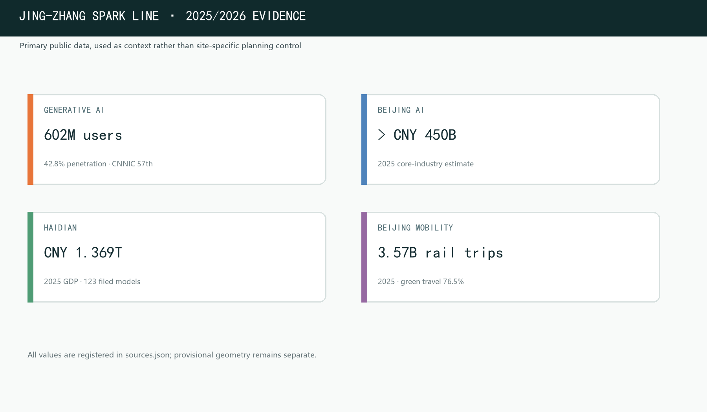

Site Overview -- JING-ZHANG SPARK LINE Spatial Structure
The overview map combines the overall design area, three key areas, land-use partition, mobility and blue-green public-space networks, and AI scenario nodes in one evidence map.

Existing Conditions and Data-Gap Diagnosis
Known facts, provisional boundaries, locked gaps and deepening triggers are managed separately. constraints.geojson remains empty because no trusted statutory-control, road-redline, river-blue-line or heritage-limit geometry is available; this prevents invented constraints.

Core Metrics
Core spatial metrics are recomputed from submitted geometry in EPSG:4548. Green and public-space ratios support talent interaction and ecological quality; building footprint is a concept-level design quantity, not a statutory value.
Self-Check Status
Deterministic validation, spatial review, visual packaging check and professional evidence review must all pass. Current boundary: provisional geometry for intake only; official polygons will require full recalculation of areas, ratios, drawings and metrics.
Controls Pending Official Data
FAR, building height, density, setbacks, road redlines and municipal capacity have no official regulatory-plan conditions; they are recorded as status=unknown and will be recalculated when official data is supplied - never presented as approved limits.
Three-Level Scope Framework
Coordinated research area (43.6 km², industry & future-city strategy), overall design area (11.4 km², urban renewal at regulatory-plan depth), and key detailed-design area (368.4 ha, three zones).

Coordinated Research Area
A world-class AI innovation ecosystem, industry-chain synergy, three-zone + two-wing structure and future AI city form across 43.6 km².
- AI ecosystem and industry chain
- Naming / Logo and visual identity
- Future city form and AI+ mobility
Overall Design Area
Urban renewal framework, industry layout, transport/rail/municipal support and the Jing-Zhang Heritage Park vitality belt across 11.4 km².
- Regulatory-plan depth urban design
- Land use, buildings, retain/renovate/demolish logic
- Blue-green, slow mobility and city character
Key Detailed-Design Area
Detailed design for the three key zones: function, building scale, retain/renovation classification, public-space connectivity and transport organization.
- Zhongzhiyuan AI Acceleration Zone
- Beijing AI Origin Community
- Dazhongsi AI Industry Cluster
Key Detailed-Design Areas
Each key zone responds to the integrated-planning task framework at submission stage, covering positioning, spatial structure, building renewal, mobility, public space, AI scenarios and risk. Missing boundaries, ownership, existing-building surveys and statutory controls prevent any approval- or parcel-ready claim.

Zhongzhiyuan AI Acceleration Zone
Garden-style full-stack innovation district hosting model testing, standards workshops, safety-governance display and low-carbon compute experience.
Beijing AI Origin Community
Campus-adjacent outcome-transformation and talent community stitching campus, park and street; launch events, talent services and open-source collaboration.
Dazhongsi AI Industry Cluster
Urban smart-economy and international-exchange district around Dazhongsi station integration, four-quadrant pedestrian connectivity and AI-native new formats.
Mobility & Blue-Green Public Space
Using the Jing-Zhang Heritage Park belt as the spine and integrating Qing River and Xiaoyue River blue-green corridors, the proposal identifies slow-mobility gaps and cross-expressway nodes for a connected north-south / east-west system.

AI-Era Industry & Employment Evidence
Public 2025 and 2026-H1 reports support the AI-era context: 602 million generative-AI users, Beijing AI core-industry scale expected above CNY 450 billion, Haidian GDP of CNY 1.369 trillion with 123 filed large models, and 3.57 billion Beijing rail passengers. All sources are registered in sources.json; low-confidence industry estimates are excluded from this core figure.

AI Scenarios & Personas
For AI talent, enterprises, residents and public governance, the proposal defines 10+ scenario cards, 3 industry test/validation scenarios and 5 user personas, each anchored to specific spatial layers and governance boundaries.
Origin Community: launch events, open-source contribution display and small roadshows for developers and startups.
Zhongzhiyuan translates standards, safety evaluation and red-team testing into visitable, supervised collaboration nodes.
New-infrastructure prototype combined with public services and low-carbon energy.
Explainable wayfinding to identify slow-mobility gaps, congestion and accessibility needs.
Showcase, negotiation, media and international exchange for agents, terminals and content companies.
Green space, stormwater, walking/cycling and AI display as the district public living room.
Incubation, legal, IP and investment services for university transformation.
City-service interface for compliant, authorized, auditable data-element circulation.
AI+ healthcare, education, legal and life services in operable small-scale blocks.
A walkable route linking heritage culture, open source, industry display and international roadshows.
Coverage & Compliance Matrix
compliance_matrix.json covers announcement tasks 1.3, 1.4, 1.5 and agent.1-agent.6; standard_matrix.json and design_depth_matrix.json evidence professional standards and depth.
| Task | Response | Evidence Location |
|---|---|---|
| agent.1 Concept & Naming | Overall concept, naming system, Logo direction, three-zone two-wing synergy loop | proposal.md / visual / drawings |
| agent.2 AI Full-Stack Ecosystem | 5-8 global cases, ecosystem map, Zhongzhiyuan full-stack system, Zhongguancun service wing | proposal.md / metrics.json |
| agent.3 AI+ Scenario Enablement | 10+ scenario cards, 3 test/validation scenarios, 5 personas, scenario-space-operation mapping | proposal.md / scenario cards |
| agent.4 Public Space & Landmarks | Jing-Zhang Park AI public space, 3+ AI pilgrimage landmarks, honor display and component library | proposal.md / public_space.geojson |
| agent.5 Cultural Narrative | Jing-Zhang railway, Zhongguancun and AI new-culture fusion narrative, signage symbols | proposal.md / narrative |
| agent.6 Long-Term Operation | Annual event system, developer community, scenario open operation, international communication & conversion | proposal.md / operation |
Sources
Sources are logged in sources.json, agent_taskbook.json, data/source_registry.json and standards/references. This page is offline static: no CDN, remote tiles, external scripts, external fonts or iframes.
Assumptions & Data Gaps
Pending official boundary, regulatory controls, road redlines, ownership, municipal, heritage and engineering conditions are registered in assumptions.json and affect conclusions; all metrics require recalculation once official geometry arrives.